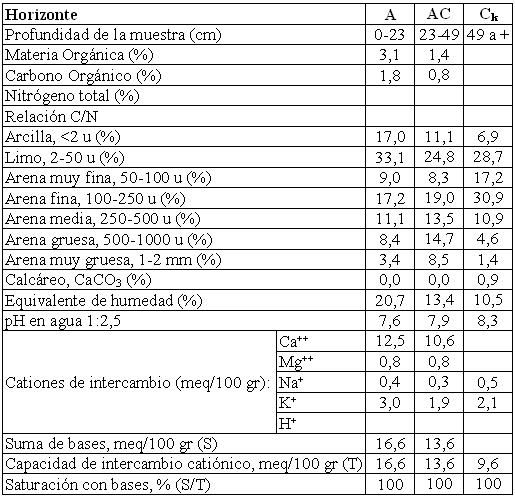

Haplustol éntico, franca gruesa a arenosa, mixta, térmica
Capacidad de uso: IVsc
La Serie Los Cometierra es un suelo desarrollado incipientemente sobre derrames fluviales y albardones distales de los ríos Jesús María, Los Mistoles y otros menores. Normalmente ocupa situaciones en el terreno suavemente elevadas con drenaje algo excesivo. La capa arable de 23 cm de espesor, tiene textura franca a franco arenosa; continúa hacia abajo un horizonte de transición (AC) que se extiende hasta 49 cm con estructura muy débil a masiva. A partir de la profundidad indicada se encuentra el material originario (Ck), masivo con textura franco arenosa a arenosa y ligero contenido de carbonatos libres en la masa del suelo (1%). Este suelo presenta dos limitantes fundamentales: moderada a baja retención de humedad, que incluye drenaje algo excesivo y la climática general para toda la región.
Descripción del perfil típico:
Un perfil representativo de esta Serie fue descrito a 7 km al SSO del paraje homónimo, departamento Totoral, provincia de Córdoba.
A 0-23 cm; color en húmedo pardo grisáceo muy oscuro (10YR3/2); franco a franco arenoso; estructura en bloques subangulares medios moderados a débiles; friable en húmedo; no plástico; no adhesivo; pH 7,6; raíces muy abundantes; límite inferior claro.
AC 23-49 cm; color en húmedo pardo a pardo oscuro (10YR4/3); franco arenoso; masivo y estructura en bloques débiles; muy friable en húmedo; pH 7,9; raíces escasas; límite inferior gradual.
Ck 49 cm a +; color en húmedo pardo amarillento oscuro (10YR4/4); franco arenoso a arenoso; masivo; muy friable; leve reacción al ácido clorhídrico.
Cuadro Nº23
Datos analíticos Serie LOS COMETIERRA
Ubicación: Latitud 30°56'S Longitud 63°56'O Altitud: 395 m.s.n.m.

|